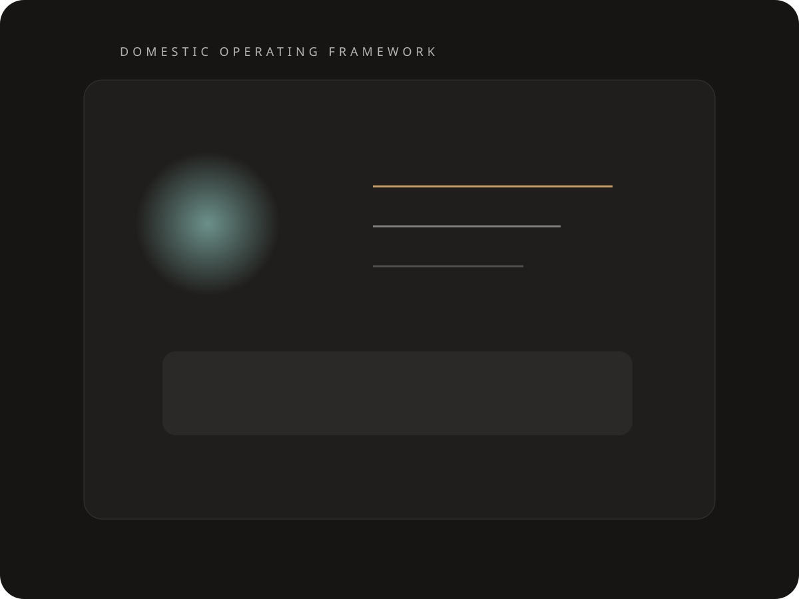

Domestic Project Vehicle
Useful for the work that should be handled well, not advertised loudly.
Intrados Enterprises is a quiet Nigeria-based platform for side projects, local execution, discreet advisory, and commercial coordination where the real value is reliability, responsiveness, and informed judgement.
Scope
A catchall vehicle, presented with more discipline and more intent.
The site is deliberately compact, but the posture is premium: less hustle, more calm competence. It gives side projects and local opportunities a credible front door without pretending they need a full corporate theatre.
Operating Model
Lean enough to move fast. Credible enough to be trusted.
Intrados is built for principals who need something practical on the ground: someone to advance the work, navigate local constraints, keep counterparties aligned, and quietly close loops without creating unnecessary process noise.

Introductions
Available for a limited number of mandates and referrals.
Quietly capable. Intentionally under the radar.
Nigeria-based operating and consulting vehicle for useful special work.